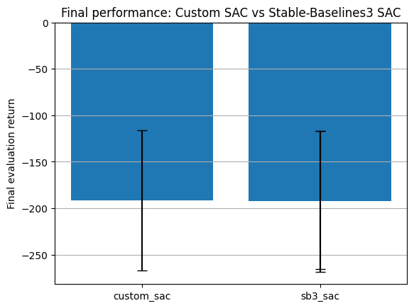
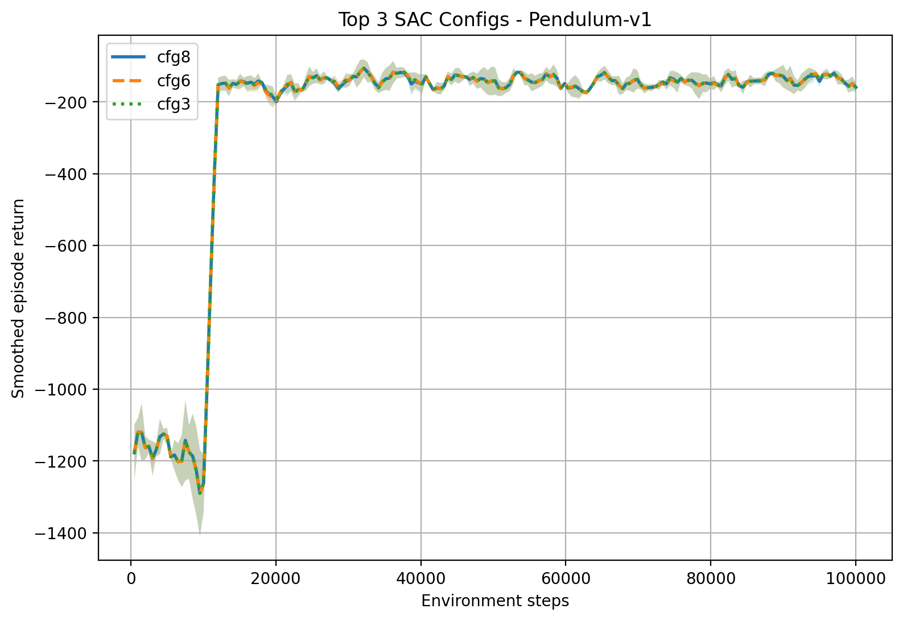
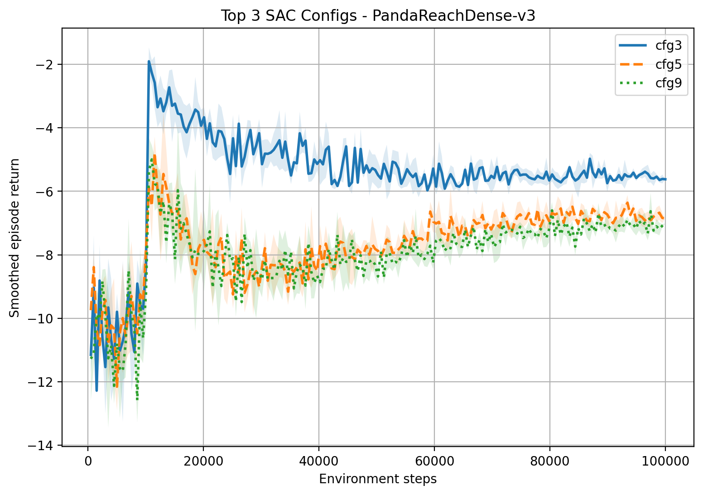
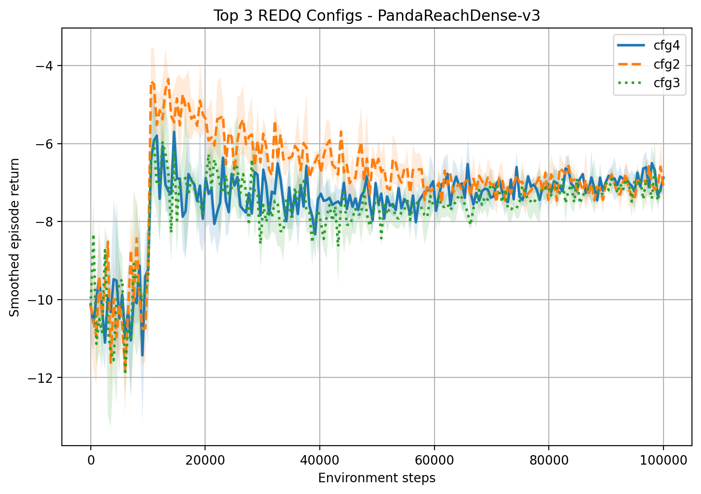
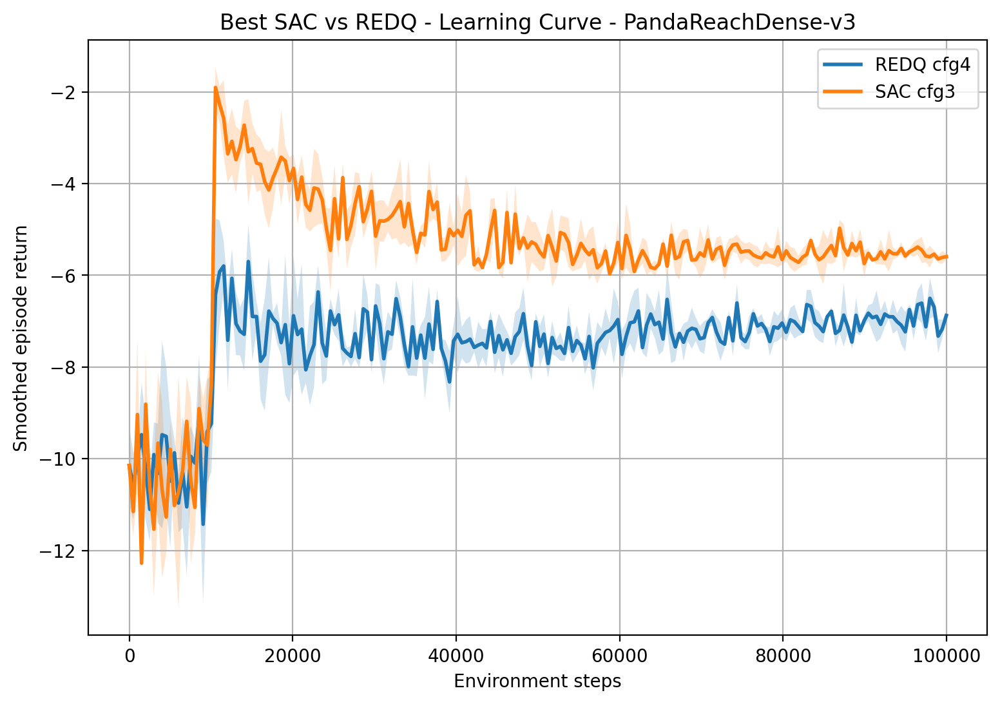

Off-Policy Reinforcement Learning:
A Comparison of SAC and REDQ
Online HTML version with videos
This report includes evaluation videos of the trained agents. To view the videos correctly, please access the interactive HTML version of the report.
Abstract- This project compares two off-policy actor-critic reinforcement learning algorithms, Soft Actor-Critic (SAC) and Randomized Ensembled Double Q-Learning (REDQ), on two environments: Pendulum-v1 and PandaReachDense-v3. Both algorithms were implemented trained using different hyperparameter configurations, using 3 random seeds and 100,000 training steps per experiment. The results show that both algorithms learned meaningful policies outperforming the random baseline. SAC showed a more robust behavior across experiments and achieved the best validation performance. REDQ obtained a strong training performance in Pendulum-v1 but was more sensitive to hyperparameter tuning, especially to the update-to-data ratio. Overall, the results show that SAC provides a more stable performance, while REDQ could benefit from a wider hyperparameter search.
I. Introduction
Off-policy reinforcement learning is a type of reinforcement learning in which the agent can learn from data collected by a policy different from the one currently being optimized. This is especially useful as it allows the storage of past experiences and its reuse, improving sample efficiency. Instead of discarding the transitions at each iteration, off-policy methods store transitions in a replay buffer and sample batches from it to update the policy of the agent.
This project focuses on two off-policy actor-critic algorithms, the Soft Actor-Critic (SAC) [1] and the Randomized Ensembled Double Q-learning (REDQ) [2]. Both algorithms are designed to use a stochastic policy with Q-value functions. SAC uses two Q-networks to reduce overestimation bias and includes an entropy term in the objective to encourage exploration. REDQ extends this idea by using an ensemble of Q-networks and performing several gradient updates in each interaction with the environment.
The algorithms are evaluated on two environments: Pendulum-v1 [3] and PandaReachDense-v3 [4]. Pendulum-v1 is a classical continuous control benchmark, while PandaReachDense-v3 is a robotic reaching task that represents a more complex goal-based control problem. To use the same training pipeline for both environments, several wrappers were applied.
The experimental setup compares SAC and REDQ under different hyperparameter configurations, each trained on both environments for 100,000 steps and with 3 different random seeds, to obtain more reliable results.
II. Methodology
A. Environments
1) Pendulum-v1
Pendulum-v1 [3] is a classic control environment from Gymnasium. It represents the inverted pendulum swing-up problem, a task from control theory. The environment consist of a pendulum attached to a fixed point, where the free end can move under the effect of an applied torque. The goal of the agent is to learn how to apply torque to swing the pendulum upwards and keep it in the upright position.
This environment is useful for evaluating continuous control algorithms since the agent must output a continuous torque value. The action space has shape (1,) with values between -2.0 and 2.0, with negative values corresponding to torque applied in opposite directions.
The observation space has shape (3,) and contains three values: [cos(θ), sin(θ), dθ/dt]. These correspond to the cosine and sine of the pendulum angle and the angular velocity, which is bounded between -8.0 and 8.0.
The reward function penalizes three aspects:
- The distance from the upright position
- The angular velocity
- The magnitude of the torque applied
2) PandaReachDense-v3
PandaReachDense-v3 [4] is a robotic control environment from PandaGym, a Gymnasium-compatible benchmark based on the Franka Emika Panda robot. PandaGym includes several robotic manipulation tasks, such as reaching, pushing, sliding, pick and place, stacking and flipping. In this project the selected task is reach, where the robot needs to move to a target position.
In PandaReachDense-v3, the agent controls the robot using end-effector displacement control, which means that the action does not represent individual joint movements, but instead corresponds to the displacement applied to the robot end-effector. The goal is to learn a policy that moves the end-effector as close as possible to the desired target.
The environment uses a dense reward function, which provides a gradual feedback during learning instead of only receiving a reward when the task is completed. In PandaGym, dense rewards are designed in a way in which the closer the agent is to complete the task, the higher the reward is.
The observation space is a dictionary with achieved_goal, desired goal, and observation, which includes the end-effector position and velocity [5]. In this project, the dictionary observation is flattened into a single vector before being passed to the SAC and REDQ networks, to keep the same neural network structure for both environments.
Compared with Pendulum-v1, PandaReachDense-v3 represents a more complex and more realistic control problem, that involves robotic movement.
3) Wrappers
Several wrappers were used to preprocess the environments, make them compatible with the SAC and REDQ models and with the two environments.
The first wrapper is the FlattenobservationWrapper. This wrapper converts the environment observation into a flat numpy array. This is especially important for PandaGym environments, in which as mentioned, the observations are returned as a dictionary containing fields such as achieved_goal, desired_goal and observation.
The second wrapper is the DtypeobservationWrapper, which converts all observations to float32, ensuring consistency between the environment output and the Pytorch models.
The RescaleWrapper is used to normalize the action space. The agent produces actions in the range [-1,1], and this wrapper rescales them to the real action range of each environment.
Finally, the EpisodeinfoWrapper tracks the total reward and the length of each episode. When an episode finishes, it stores this information in the info dictionary.
B. Models
The implemented models are based on off-policy actor-critic reinforcement learning. Both SAC and REDQ use a repplay buffer to store transitions in the form: (state, action, reward, next_state, done). These transitions are samples in mini batches to update the neural networks, making the models off-policy, as they are able to learn from previous experiences.
Both models also share the same policy and critic architectures. The policy is a Gaussian stochastic policy that receives the current state and outputs the mean and log standar deviation of a Gaussian distribution. Next, an action is sampled from this distribution, passed through a tahn function to keep it bounded and then rescaled to the action range from the environment.
The critic is implemented as a Q-network that receives the state and action concatenated and outputs a scalar estimation of the Q(s,a), that represents the expected return of taking action a in the state s and then following the policy.
1) SAC
Soft Actor-Critic (SAC) [1] is an off-policy actor-critic reinforcement learning algorithm. It is based on the maximum entropy framework, meaning that the policy is trained to maximize the expected reward and the expected entropy, which encourages exploration. SAC combines three main ideas: an actor-critic architecture, off-policy learning and entropy maximization. According to [1] this combination improves sample efficiency, stability, and performance compare with previous on-policy and off-policy methods.
Specifically, in this implementation, the SAC agent contains:
- One Gaussian policy network
- Two Q-networks: Q1 and Q2
- Two target Q-networks: Q1_target and Q2_target
- One optimizer for the policy
- One optimizer for each Q-network
The target Q-networks are initialized with the same weights as the online Q-networks and are updated slowly using the following soft updates:
target_param = τ · online_param + (1 - τ) · target_param
Making the target values more stable during training.
During each update, a batch of transitions is sampled from the replay buffer and the target Q-value is computed using the next action sampled from the current policy and the minimum value predicted by the two target Q-networks:
target_q = reward + γ · (1 - done) ·
(min(Q1,target, Q2,target)
- α · log_prob)
Then both Q-networks are trained using mean squared error between the predictions and the target Q-value. After that the policy is updated by sampling new actions and maximizing the predicted Q-value while also considering the entropy term:
policy_loss = mean(α · log_prob - min_q)
Finally, the target networks are softly updated.
The pseudocode can be seen below:
Initialize Gaussian policy π
Initialize Q-networks Q1 and Q2
Initialize target networks Q1_target and Q2_target
Initialize replay buffer DFor each environment step:
if step < start_steps:
Select a random action
else:
Sample action from policy π
Execute action in the environment
Store transition in replay buffer D
if episode ends:
Reset environment
if update condition is satisfied:
for each gradient update:
Sample a batch from D
Sample next action from π(next_state)
Compute log probability
target_q = reward + γ · (1 - done) ·
(min(Q1_target, Q2_target) - α · log_prob)
Update Q1 and Q2 using MSE loss
Sample new action from π(state)
policy_loss = α · log_prob - min(Q1, Q2)
Update policy network
Soft update target networks
To validate the performance of the custom SAC implementation, it was compared against the SAC implementation from Stable-Baselines3 [6] on the Pendulum-v1 environment (see validationSAC.py). Both models were trained using equivalent hyperparameters, such as the same learning rate, the same discount factor or the same replay buffer size. After training, both agents were evaluated using deterministic actions over 10 independent episodes with different random seeds, ensuring that these episodes were different from the ones used for training. Finally, the mean and standard deviation of the episode returns were saved for both models and plotted with error bars. This comparison provides a reference about if the custom SAC is capable of achieving similar performance to a well-established library implementation.
2) REDQ
Randomized Ensembled Double Q-learning (REDQ) [2] is also an off-policy actor-critic algorithm. It is closely related to SAC, but modifies the critic part by using an ensemble of several Q-networks. This ensemble is combined with a high update-to-data (UTD) ratio, meaning that the agent performs several gradient updates per environment interacion. As a result, REDQ can learn more from each collected transition, improving sample efficiency.
However, using a high UTD ratio can lead to unstable or biased Q-value estimates. To reduce te overestimation bias, REDQ uses a random subset of Q-networks when computing the target value. In this implementation, the algorithm randomly selects M Q-networks from an ensemble of N Q-networks and uses the minimum value, reducing overestimation and still taking advantage from the ensemble. The three main REDQ hyperparameters are therefore the UTD ratio G, the ensemble size N, and the subset of size M.
In this implementation the REDQ agent contains:
- One Gaussian policy network
- An ensemble of N Q-networks
- An ensemble of N target Q-networks
- One optimizer for the policy
- One optimizer for each Q-network
As in SAC, during each update, a batch is sampled from the replay buffer. Then the next action is sampled from the policy, a random subset of M target networks is selected and the target value is computed using the minimum value from this subset:
target_q = reward + γ · (1 - done) ·
(min(selected Q_targets) - α · log_prob)
After computing the target, all Q-networks are updated using the same target value. Finally, the policy is updated evaluating the new sampled action using the mean Q-value of the ensemble in the policy loss.
Initialize Gaussian policy π
Initialize an ensemble of N Q-networks
Initialize an ensemble of N target Q-networks
Initialize replay buffer DFor each environment step:
if step < start_steps:
Select a random action
else:
Sample action from policy π
Execute action in the environment
Store transition in replay buffer D
if episode ends:
Reset environment
if update condition is satisfied:
for g = 1 to G:
Sample a batch from D
Sample next action from π(next_state)
Compute log probability
Randomly select M target Q-networks
target_q = reward + γ · (1 - done) ·
(min(selected Q_targets) - α · log_prob)
for each Q-network in the ensemble:
Update Q-network using MSE loss
Soft update all target Q-networks
Sample new action from π(state)
Evaluate action using all Q-networks
Compute mean Q-value of the ensemble
policy_loss = α · log_prob - mean_q
Update policy network
C. Training Settings
1) General parameters
All experiments were performed using the same general training pipeline for both SAC and REDQ algoeithms. These were evaluated on two environments: Pendulum-v1 and PandaReachDense-v3. Each experiment was trained for 100,000 environment steps, and each condifiguration was repeated using three different random seeds: 0,1 and 2, reducing dependency on random initialization.
The environments were created using a common function (see make_env). This function applied the same wrappers to all environments: observations were flattened, converted to float32, actions were rescaled and episode information was tracked.
At the beginning of training, random actions were used for the first 10,000 steps to fill the replay buffer and encourage initial exploration, after that actions were selected using the learned stochastic policy. Network updates started after 1,000 steps, with the replay buffer containing enough examples from a batch. The replay buffer size was 1,000,000 transitions, the batch size was 256, the discount factor was 0.99 and the soft target update coefficient was 0.005.
During training, the episode return, length and loss values were logged. These logs were saved into CSV files and the trained policy was stored as a checkpoint.
2) Hyperparameter tuning
Several hyperparameter variations were tested for both SAC and REDQ (see Tables 1 and 2).
| Config | Changed parameter | LR | alpha | Batch | Hidden | Upd. every | Updates |
|---|---|---|---|---|---|---|---|
| SAC-0 | Baseline | 3e-4 | 0.2 | 256 | 256 | 50 | 50 |
| SAC-1 | Learning rate ↓ | 1e-4 | 0.2 | 256 | 256 | 50 | 50 |
| SAC-2 | Learning rate ↑ | 5e-4 | 0.2 | 256 | 256 | 50 | 50 |
| SAC-3 | Entropy coeff. ↓ | 3e-4 | 0.1 | 256 | 256 | 50 | 50 |
| SAC-4 | Entropy coeff. ↑ | 3e-4 | 0.3 | 256 | 256 | 50 | 50 |
| SAC-5 | Batch size ↓ | 3e-4 | 0.2 | 128 | 256 | 50 | 50 |
| SAC-6 | Batch size ↑ | 3e-4 | 0.2 | 512 | 256 | 50 | 50 |
| SAC-7 | Network size ↓ | 3e-4 | 0.2 | 256 | 128 | 50 | 50 |
| SAC-8 | Network size ↑ | 3e-4 | 0.2 | 256 | 512 | 50 | 50 |
| SAC-9 | Update schedule | 3e-4 | 0.2 | 256 | 256 | 1 | 1 |
| SAC-10 | Update schedule | 3e-4 | 0.2 | 256 | 256 | 10 | 10 |
| Config | Changed parameter | LR | alpha | Batch | Hidden | N | M | G |
|---|---|---|---|---|---|---|---|---|
| REDQ-0 | Baseline | 3e-4 | 0.2 | 256 | 256 | 10 | 2 | 20 |
| REDQ-1 | Learning rate ↓ | 1e-4 | 0.2 | 256 | 256 | 10 | 2 | 20 |
| REDQ-2 | Subset size M ↑ | 3e-4 | 0.2 | 256 | 256 | 10 | 5 | 20 |
| REDQ-3 | Ensemble size N ↓ | 3e-4 | 0.2 | 256 | 256 | 5 | 2 | 20 |
| REDQ-4 | UTD ratio G ↓ | 3e-4 | 0.2 | 256 | 256 | 10 | 2 | 5 |
The SAC experiments start from a baseline configuration with learning rate 3e-4, entropy coefficient 0.2, batch size 256, hidden dimension 256, update frequency 50, and 50 gradient updates. The following configurations modify one aspect at a time: the learning rate, entropy coefficient, batch size, network size and update schedule (see Table 1).
The REDQ experiments also start from a baseline configuration with learning rate 3e-4, entropy coefficient 0.2, batch size 256, hidden dimension 256, an ensemble of 10 Q-networks, a target subset size of 2, and 20 gradient updates. The tested variations modify the learning rate, the subset size, the ensemble size and the UTD ratio.
It should be mentioned that although the SAC uses 50 gradient updates per phase and REDQ uses 20, REDQ updates much more frequently. SAC performs 50 updates every 50 environment steps, corresponding to approximately one update per step, while REDQ performs 20 updates at every step.
3) Random baseline
Apart from the experiments, a random baseline was used as a reference to evaluate if SAC and REDQ agents learned meaningful policies (see random_baseline.py). Instead of training an agent, the baseline selects actions randomly from the environment action space. It was evaluated on the same environments and seeds used in the main experiments. For each seed, the random policy was tested over 10 evaluation episodes using shifted seeds obtaining reproducible episodes different from the ones used for training. During evaluation, the episode return and episode length were recorded, and the final results were saved in CSV files.
III. Results
A. SAC validation
Figure 3 compares the final evaluation performance of the custom SAC implementation againts the Stable-Baselines3 SAC implementation on Pendulum-v1.

B. Hyperparameter tuning
1) SAC
The SAC configuration results averaged over three seeds can be seen in Table 3.
| Environment | Config | Changed parameter | Final return mean | Final return std |
|---|---|---|---|---|
| PandaReachDense-v3 | SAC-0 | Baseline | -6.71 | 0.38 |
| PandaReachDense-v3 | SAC-1 | Learning rate ↓ | -8.32 | 0.42 |
| PandaReachDense-v3 | SAC-2 | Learning rate ↑ | -6.79 | 0.37 |
| PandaReachDense-v3 | SAC-3 | Entropy coefficient ↓ | -5.59 | 0.08 |
| PandaReachDense-v3 | SAC-4 | Entropy coefficient ↑ | -7.77 | 0.83 |
| PandaReachDense-v3 | SAC-5 | Batch size ↓ | -6.52 | 0.33 |
| PandaReachDense-v3 | SAC-6 | Batch size ↑ | -7.01 | 0.15 |
| PandaReachDense-v3 | SAC-7 | Network size ↓ | -6.73 | 0.35 |
| PandaReachDense-v3 | SAC-8 | Network size ↑ | -7.30 | 0.47 |
| PandaReachDense-v3 | SAC-9 | Update schedule, G=1 | -6.62 | 0.37 |
| PandaReachDense-v3 | SAC-10 | Update schedule, G=10 | -6.85 | 0.24 |
| Pendulum-v1 | SAC-0 | Baseline | -159.91 | 15.16 |
| Pendulum-v1 | SAC-1 | Learning rate ↓ | -160.16 | 14.91 |
| Pendulum-v1 | SAC-2 | Learning rate ↑ | -159.92 | 14.92 |
| Pendulum-v1 | SAC-3 | Entropy coefficient ↓ | -159.82 | 15.05 |
| Pendulum-v1 | SAC-4 | Entropy coefficient ↑ | -160.35 | 15.52 |
| Pendulum-v1 | SAC-5 | Batch size ↓ | -160.07 | 15.02 |
| Pendulum-v1 | SAC-6 | Batch size ↑ | -159.77 | 15.12 |
| Pendulum-v1 | SAC-7 | Network size ↓ | -161.04 | 13.57 |
| Pendulum-v1 | SAC-8 | Network size ↑ | -159.38 | 15.06 |
| Pendulum-v1 | SAC-9 | Update schedule, G=1 | -160.19 | 15.43 |
| Pendulum-v1 | SAC-10 | Update schedule, G=10 | -160.03 | 15.50 |
Figure 4 compares the top three SAC configurations for both environments. The configurations were selected based on their final performance, measured as the mean return over the last 10 episodes and averaged across seeds.


2) REDQ
The REDQ configuration results averaged over three seeds can be seen in Table 4.
| Environment | Config | Changed parameter | Final return mean | Final return std |
|---|---|---|---|---|
| PandaReachDense-v3 | REDQ-0 | Baseline | -21.01 | 24.01 |
| PandaReachDense-v3 | REDQ-1 | Learning rate ↓ | -7.29 | 0.18 |
| PandaReachDense-v3 | REDQ-2 | Number of critics sampled M ↑ | -7.09 | 0.50 |
| PandaReachDense-v3 | REDQ-3 | Ensemble size N ↓ | -7.21 | 0.07 |
| PandaReachDense-v3 | REDQ-4 | Update-to-data ratio G ↓ | -6.88 | 0.08 |
| Pendulum-v1 | REDQ-0 | Baseline | -152.55 | 11.30 |
| Pendulum-v1 | REDQ-1 | Learning rate ↓ | -142.29 | 30.01 |
| Pendulum-v1 | REDQ-2 | Number of critics sampled M ↑ | -175.89 | 29.80 |
| Pendulum-v1 | REDQ-3 | Ensemble size N ↓ | -151.00 | 34.19 |
| Pendulum-v1 | REDQ-4 | Update-to-data ratio G ↓ | -146.05 | 10.92 |
Figure 5 compares the top three REDQ configurations for PandaReachDense-v3 environment. The configurations were selected based on their final performance, measured as the mean return over the last 10 episodes and averaged across seeds.

C. Best configurations per model
1) SAC
The best SAC configuration for each environment based on the higher final return mean, can be seen in Table 5.
| Environment | Best SAC config | Changed parameter | Final return mean | Final return std |
|---|---|---|---|---|
| PandaReachDense-v3 | SAC-3 | Entropy coefficient ↓ | -5.59 | 0.08 |
| Pendulum-v1 | SAC-8 | Network size ↑ | -159.38 | 15.06 |
Figure 6 shows an evaluation videos of the trained agent, on the different environments, using the best configuration.
2) REDQ
The best REDQ configuration for each environment, selected according to the highest final return mean can be seen in Table 6.
| Environment | Best REDQ config | Changed parameter | Final return mean | Final return std |
|---|---|---|---|---|
| PandaReachDense-v3 | REDQ-4 | Update-to-data ratio ↓ | -6.88 | 0.08 |
| Pendulum-v1 | REDQ-1 | Learning rate ↓ | -142.29 | 30.01 |
Figure 7 shows an evaluation videos of the REDQ trained agent, on the different environments, using the best configuration.
D. SAC vs REDQ
The summary performance in training SAC vs REDQ can be seen in Table 7.
| Environment | Best SAC config | SAC final return | SAC std | Best REDQ config | REDQ final return | REDQ std | REDQ − SAC |
|---|---|---|---|---|---|---|---|
| PandaReachDense-v3 | SAC-3 | -5.59 | 0.08 | REDQ-4 | -6.88 | 0.08 | -1.28 |
| Pendulum-v1 | SAC-8 | -159.38 | 15.06 | REDQ-1 | -142.29 | 30.01 | 17.09 |
1) Best SAC vs REDQ learning curves
The best learning curves for the PandaReachDense-v3 environment and each of the models, can be seen in Figure 8.

2) Validation
Due to computational constraints, validation was performed only on the best-performing SAC and REDQ configurations selected from the training results. The selected models were chosen based on their final training performance and were then evaluated separately using deterministic policy execution, without further parameter updates (see Table 8).
| Environment | Model | Mean return | Std return across seeds | Mean episode length |
|---|---|---|---|---|
| PandaReachDense-v3 | REDQ | -6.33 | 0.12 | 50.00 |
| PandaReachDense-v3 | SAC | -5.21 | 0.19 | 50.00 |
| Pendulum-v1 | REDQ | -180.23 | 12.78 | 200.00 |
| Pendulum-v1 | SAC | -177.10 | 12.89 | 200.00 |
E. Random baseline
Table 9 reports the performance of a random policy used as a baseline. The random baseline was evaluated on both environments using the same seeds as the main experiments and with 10 evaluation episodes per seed.
| Environment | Model | Mean return | Std return across seeds | Mean episode length |
|---|---|---|---|---|
| PandaReachDense-v3 | Random | -8.23 | 1.11 | 40.13 |
| Pendulum-v1 | Random | -1351.63 | 56.03 | 200.00 |
IV. Discussion
A. SAC validation
The validation results (see Figure 3), whoe that the custom SAC implementation achieves a similar performance compared to the Stable-Baselines3 SAC on Pendulum-v1. This suggests that the main components of the implementation such as the twin Q-networks, replay buffer and target updates are working correctly. Although small differences appear, thes can be due to implementation details and train stochasticity.
B. Hyperparameter tuning
The SAC hyperparameter tuning (see Table 3 and 5), shows different behaviours depending on the environment. On one hand, in PandaReachDense-v3 environment, the entropy coefficient had the strongest effect, reducing it produced the best final return (-5.59) and the lowest variability across seeds. This finding suggests that in this robotic task, a lower entropy weight helped the policy to exploit successful actions more effectively, while increasing the entropy coeddicient, worsened performance. Regarding the learning rate, it is seen that when reducing it the final return worsens, while when increasing its value with respect to the baseline, similar results are obtained. This suggests that the lower learning rate may have slowed down learning too much. In the case of the batch size and network size, small effects are seen. Decreasing the batch size slightly improved the final return, while increasing it worsened the behavior. Reducing the network size gave a result very close to the baseline, while increasing it degraded the performance. Finally, the update schedule also had a limited effect. Using smaller and more frequent updates gave a result slightly better than the baseline, while G=10 was close to the baseline but did not improved.
On the other hand, results on the Pendulum-v1 environment, show smaller differences between SAC configurations. Most final returns were close to -160, indicating that the task was less sensitive to hyperparameters. The best results were obtained with an increased network size, but the improvement over the baseline was small. Therefore, for Pendulum-v1 the baseline SAC already performed competitively, while PandaReachDense-v3 required more carefuly tuning, maybe due to the increased complexity of the problem.
Figure 4 shows that the top SAC configurations behave differently depending on the environment. In Pendulum-v1, the three best configurations almost overlap during most of the training process. After the initial exploration phase, all curves quickly improve. This confirms that SAC is quite robust in Pendulum-v1 environment and that the tested hyperparameter changes had only a small effect.
In PandaReachDense-v3 more differences are observed. SAC-3 which uses a lower entropy coefficient achieves the best learning curve, remaining above the other configurations after the first steps. SAC-5 and SAC-9 also improve over time but they show lower final performance.
The evaluation videos in Figure 6 show the behavior learned by the best SAC agent. In Pendulum-v1, the agent performs quite well, swinging the pendulum up and keeping almost in the upright position. In PandaReachDense-v3, the performance is not that notable. The robot arm moves to the target, but the task does not appear to be solved succesfully. This supports the idea that PandaReachDense-v3 is a more challenging environment which may require longer training.
The REDQ hyperparameter tuning results, shown in Table 4 and Table 6, reveal different behaviors depending on the environment. In PandaReachDense-v3, the baseline configuration performed poorly, with a final return of -21.01 and a very large standard deviation, indicating inestability. All the modified configurations clearly improved the results, suggesting that REDQ is quite sensitive to its hyperparameters in considerably difficult scenarios. The best result for this environment, was obtained with configuration 4, where the update-to-data ratio was reduced. This configuration obtained a final return of -6.88 with a very low standard deviation, showing better performance and a higher stability compared to the baseline. This suggests that the original REDQ UTD ratio may have been too aggresive for the environment. The learning rate reduction also produced a considerable improvement with respect the baseline, reaching a final return of -7.29. Increasing the number of sampled critics also improved the results, reaching -7.09. Overall, for PandaReachDense-v3, all modifications improved the baseline, but the most significant factor was the UTD ratio.
For Pendulum-v1, a different behavior is observed. The baseline achieves a reasonable final return and the differences between other configurations are smaller. The best result was obtained reducing the learning rate, achieving a final return of -142.29. However, its standard deviation was relatively high (30.01), indicating that the improvement was not completely stable across seeds. Reducing the UTD ratio also improved over the baseline, reaching -146.05 with a lower standard deviation compared to the best configuration (see REDQ-1). Reducing the ensemble size gave a result close to the baseline, while increasing the number of sampled critics clearly worsened the performance. This may indicate that using a larger subset of critics makes the target estimation less effective on this environment.
Overall, REDQ appears to be more sensitive to hyperparameter changes than SAC, especially in PandaReachDense-v3. In this environment, the baseline REDQ was unstable and reducing UTD ratio was necessary to obtain a more stable performance. For Pendulum-v1 the baseline was already competitive. This suggests that REDQ can benefit from tuning, but its optimal parameters depend on the environment.
Figure 5 shows that the top three REDQ configurations in PandaReachDense-v3, follow a similar learning pattern, improving quickly during the first part of training and then moving to more stable values.
In Figure 7, the behavior of the best REDQ agents during evaluation can be observed. In Pendulum-v1, the agent is able to control the pendulum effectively and keep it close to the upright position. In contrast, in PandaReachDense-v3, the agent moves towards the target but the behavior is less precise.
In summary, SAC appears to be more robust to hyperparameter changes, especially in Pendulum-v1, while REDQ appears to be more sensitive to tuning, showing improved results when reducing the UTD ration on the PandaReachDense-v3 environment. Overall, both algorithms perform considerably in Pendulum-v1, while PandaReachDense-v3 remains more challenging.
However, these results should be interpreted considering the computational constraints of the experiments, in which only a limited amount of hyperparameter configurations could be testes, especially for REDQ, which is more computationally expensive due to the use of multiple Q-networks and several gradient updates at each step.
C. SAC vs REDQ
Tables 7 and 8, compare the best SAC and REDQ models in terms of training and validation performance. During training, SAC obtained the best result in PandaReachDense-v3, with a final return of -5.59, while REDQ reached -6.88. In contrast, for Pendulum-v1, REDQ obtained a better training result than sac, with a final return of -142.29 and -159.38, respectively. The validation results in Table 8, show that SAC again outperformed REDQ in PandaReachDense-v3, confirming that SAC generalized better in the robotic reaching task. For Pendulum-v1, both models obtained a very similar validation performance, with SAC slightly better (-177.10) than REDQ (-180.23), even though in training REDQ achieved better performance.
Figure 8, shows that SAC achieves better training performance than REDQ in PandaReachDense-v3, obtaining a higher return after the initial exploration. REDQ improves at the beginning, but remains below SAC during most of the training.
D. Random Baseline
In Table 8 it can be observed that the trained SAC and REDQ agents clearly outperform the random baseline reported in Table 9. In PandaReachDense-v3, both models obtained higher returns than the random policy, with SAC obtaining the best validation result. In Pendulum-v1, the difference is even larger, with the random baseline obtaining a poorer return compared to both trained agents. This confirms that both agents learned policies that are more meaningful than random behavior.
V. Conclusion
Overall, both SAC and REDQ algorithms learned meaningful policies, clearly outperforming the random baseline. SAC was more robust across hyperparameter configurations and achieved the best validation performance in both environments, but specially in PandaReachDense-v3. REDQ obtained better training performance in Pendulum-v1, but this advantage was not seen in validation. Future works should explore a wider parameter search, and especially more REDQ configurations.
VI. Code Specifications
The code used for the experiments and the obtained results are available in the following repository: GitHub repository.
References
- T. Haarnoja, A. Zhou, P. Abbeel, and S. Levine, “Soft actor-critic: Off-policy maximum entropy deep reinforcement learning with a stochastic actor,” in International conference on machine learning. Pmlr, 2018, pp. 1861-1870.
- X. Chen, C. Wang, Z. Zhou, and K. W. Ross, “Randomized ensembled double q-learning: Learning fast without a model,” CoRR, vol. abs/2101.05982, 2021. [Online]. Available: https: //arxiv.org/abs/2101.05982
- Farama Foundation, “Gymnasium Documentation: Pendulum,” https ://gymnasium.farama.org/environments/classic_control/ pendulum.html, n.d., retrieved May 8, 2026.
- panda-gym, “Environments - panda-gym v3.0.8 documentation,” https://panda-gym.readthedocs.io/en/latest/usage/environments. html, n.d., retrieved May 8, 2026.
- Units/en/unit6/hands-on.Mdx at main · huggingface/deep-rl-class. (n.d.).
- SAC - Stable Baselines3 2.9.0a2 documentation. (n.d.). Readthedocs.Io. Retrieved May 9, 2026, from https://stable-baselines3.readthedocs.io/en/master/modules/sac.html